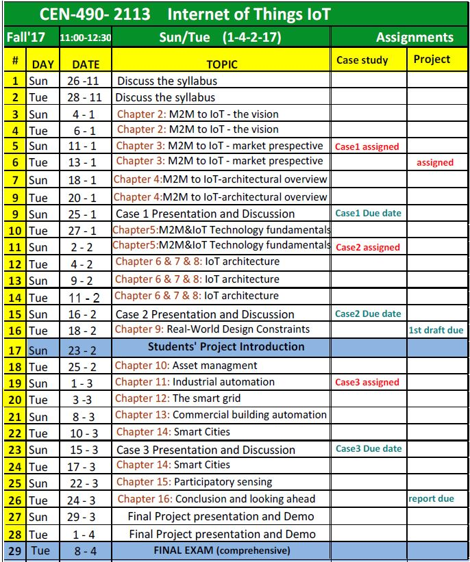

|
Dr. Umar Albalawi Assistent Professor and Department Chair |
CEN 490 Selected Topics in Computer Engneering Internet of Things
Course Description:
The Internet of Things (IoT) is a course about the new paradigm of objects interacting with people, with information systems, and with other objects. The course will focus on creative thinking and on hands-on project development.
Expected Student Learning Outcomes:
- Understand the vision of IoT from a global context
- Use of Devices, Gateways and Data Management in IoT.
- Building state of the art architecture in IoT.
- Application of IoT in Industrial and Commercial Building Automation and Real World Design Constraints.
Text Book:
Authors: Jan Holler & Vlasions Tsiatsis & Catherine Mulligan & Stamatis Karnouskos & Stefan Avesand & David Boyle
Title: From Machine-to-Machine to the Internet of Things
Grading Policy:
- Case studies: 3 case studies (30 %)
- Project (35 %)
- Final Exam: Comprehensive (35 %)
Course Content:
| homework |
|